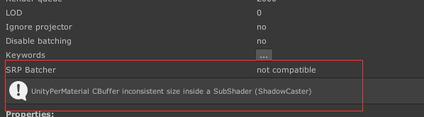

Unity Shader URP 学习 ShadowCaster
urp管线的自学hlsl之路 第十二篇 ShadowCaster和SRP batcher
对艺术家的SRP Batcher的简单理�?/a>
问题阐述
在URP管线下，需要投影，会采用直接调用官方的ShadowCaster pass(UsePass “Universal Render Pipeline/Lit/ShadowCaster�?。这样会出现问题,会让该shader无法进行SRP Batcher。如下图�?/p>

SRP Batcher
什么是SRP Batcher�?/span>
下面是官方的相关文档�?/p>
SRP 全称为Scriptable Render Pipeline，其中一部分就是SRP Batcher，主要用途在渲染过程中加速CPU。加速的原因如下�?/p>
- Each material content is now persistent in GPU memory
- A dedicated code is managing a large “per object�?GPU CBUFFER
如何使用SRP Batcher�?/span>
- 可以使用C#进行开�?figure class="highlight plaintext">
1
GraphicsSettings.useScriptableRenderPipelineBatching = true;
- 材质兼容的要�?ol>
- The object must be in a mesh. It cannot be a particle or a skinned mesh.（对象不能是粒子或者蒙皮mesh�?/li>
- You must use a Shader that is compatible with the SRP Batcher. All Lit and Unlit Shaders in HDRP and LWRP fit this requirement.(必须使用兼容的SHADER)
- Shader的要�?ol>
- All built-in engine properties must be declared in a single CBUFFER named “UnityPerDraw�? For example, unity_ObjectToWorld, or unity_SHAr.
- All Material properties must be declared in a single CBUFFER named “UnityPerMaterial�?
1
2
3
4
5
6
7
8
9
10
11
12
13
14
15
16
17
18
19
20
21
22
23
24
25
26
27
28
29
30
31
32
33
34
35
pass
{
//该pass只把主灯光空间的深度图写到了shadowmap�?addlight灯光空间目前没有写进�?导致模型无法投射addlight的阴�?但是整shader可以接受addlight的阴�?/span>
Tags
{
"LightMode"="ShadowCaster"
}
HLSLPROGRAM
#pragma vertex vertshadow
#pragma fragment fragshadow
v2f vertshadow(a2v i)
{
v2f o;
Light MainLight=GetMainLight();
float3 posWS=TransformObjectToWorld(i.vertex.xyz);
float3 nDirWS=TransformObjectToWorldNormal(i.normal.xyz);
o.pos=TransformWorldToHClip(ApplyShadowBias(posWS,nDirWS,MainLight.direction));
//Z反向
#if UNITY_REVERSED_Z
o.pos.z=min(o.pos.z,o.pos.w*UNITY_NEAR_CLIP_VALUE);
#else
o.pos.z=max(o.pos.z,o.pos.w*UNITY_NEAR_CLIP_VALUE);
#endif
return o;
}
half4 fragshadow(v2f i):SV_TARGET{
return 0;
}
ENDHLSL
}
1 | GraphicsSettings.useScriptableRenderPipelineBatching = true; |
1 | pass |
关于本文
本文作�?Master Gong Sheng, 许可�?CC BY-NC 4.0.